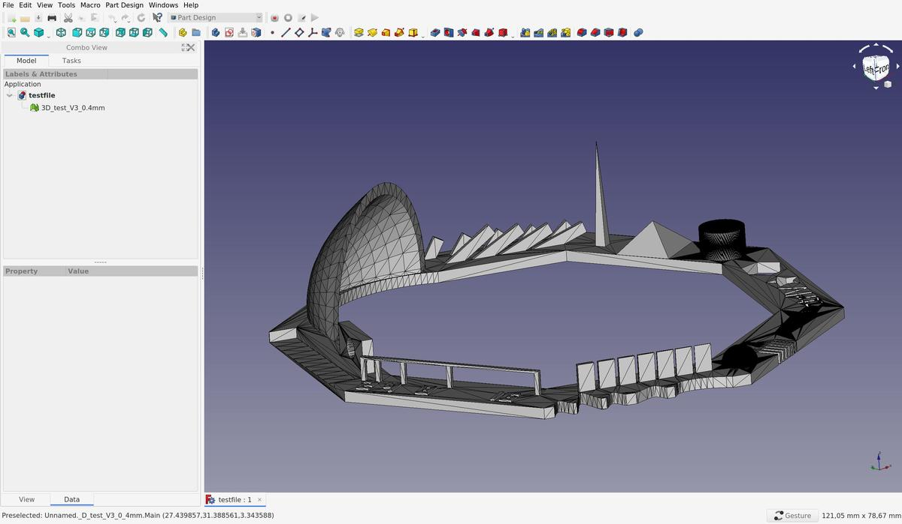
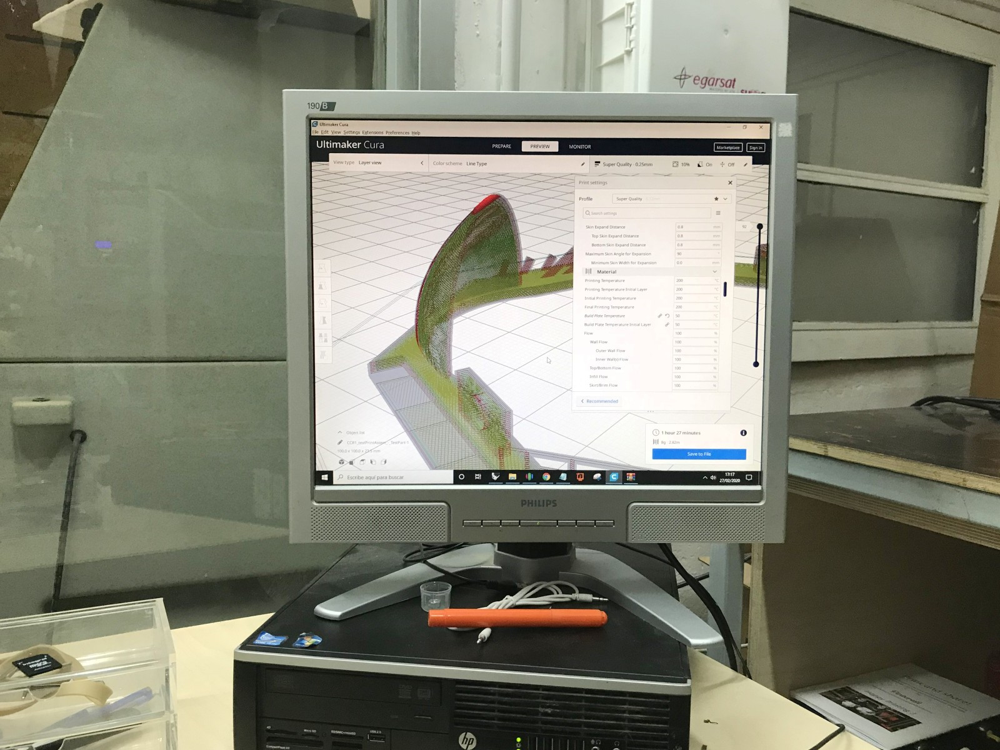
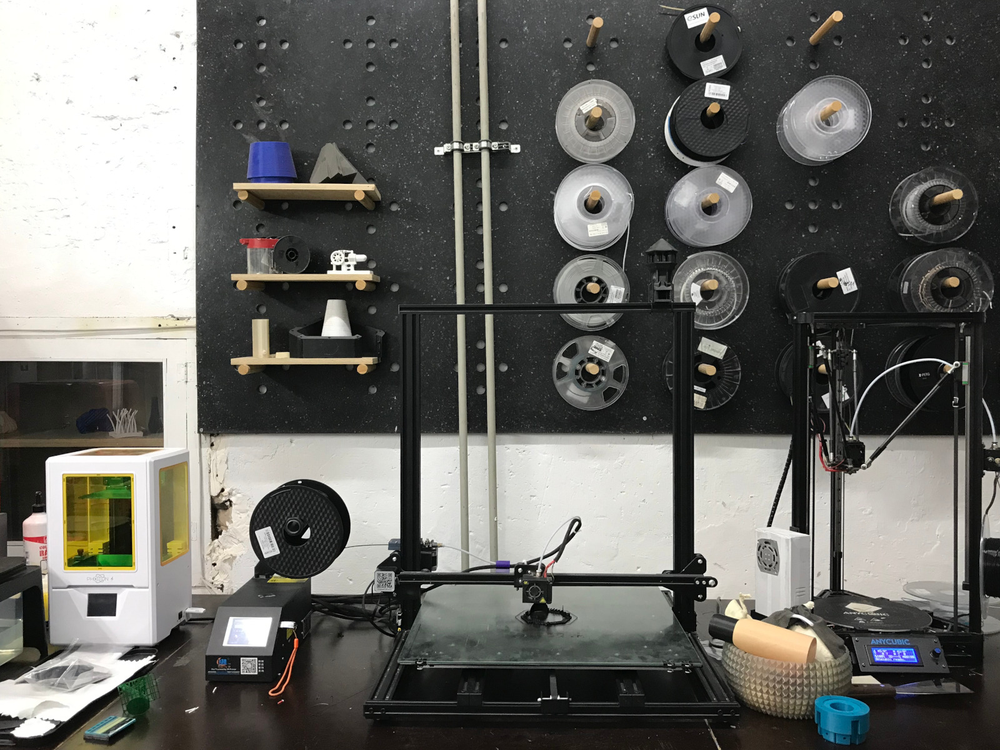
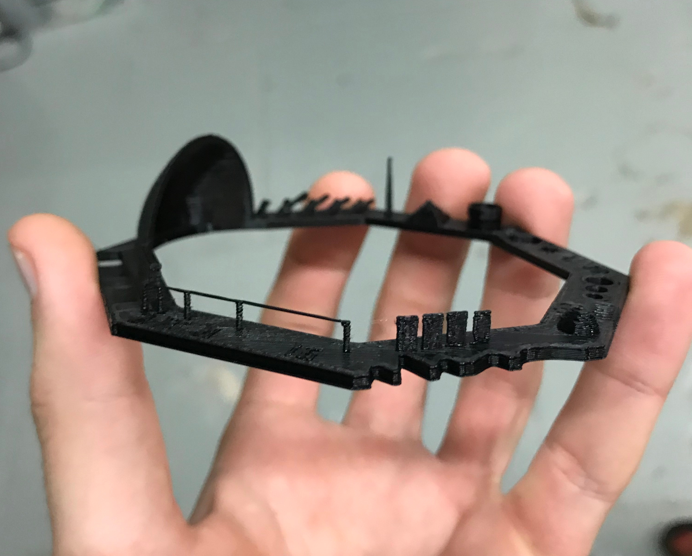
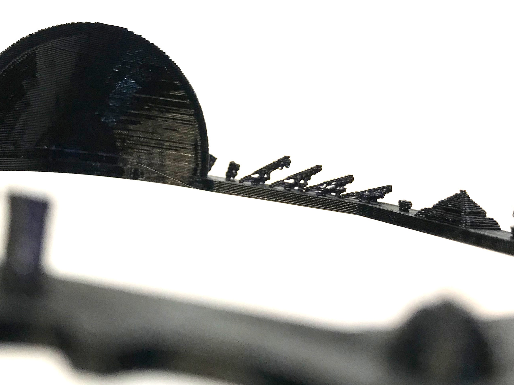

3D scanning and printing
3D Scan
Meshroom is an open-source photogrammetry software.
Photogrammetry is the art, science and technology of obtaining reliable information about physical objects and the environment through the process of recording, measuring and interpreting photographic images and patterns of electromagnetic radiant imagery and other phenomena.
Installation
- Download the binary from Meshroom home page
- Unzip it in any folder.
- Open a terminal and from this folder run
./Meshroomto launch the GUI.
How-to
- Take pictures around the object you want to scan
- Import them into Meshroom
Print a 3D test file
For this week's group assignement, I teamed up with Tue and David. We picked a test file from Thingiverse in order to test different features of one of the 3D printers we have in Fab Lab Barcelona, the Creality3D CR-10 S5 3D.

This file allows us to test these features: Z-height check, warp check, spike, hole in wall, raft test, overhang Steps 50° - 70°, 2 different extrusion widths: 0.48mm & 0.4mm.
Slicing
To be able to print a 3D model, we have to send instructions to the printer, wich are written in g-code and tells the motors where to move. To prepare the g-code, we have to slice our 3D model (.STL), to simulate and anticipate how the model will be printed, according to the printer settings and gravity law.

At Fab Lab Barcelona, a computer with Ultimaker Cura is attached to the machines, with all the presets of the differents printers saved in it. It's therefore easier to directly use it in order to slice our model instead of searching the presets and install them on our personal laptop.
Specific settings that we'd to specify
- layer height:
0.25mm - Wall thickness:
0.8mm(= 2 lines) - Infill:
10% - Print speed:
60mm/s(= maximum for this printer)
Printing
The filament we use is a PLA 1.75mm. It's a plant-based material made from starches like soybeans or corn. It needs to be heated at 190-200C° to be used.

The printing was done in ~50 minutes without any troubles.
 
Results
As we can see in the images above, the definition of the print is quite good, the details are respected and the print angles can be large.
Print something - An oloid
I'm exploring different types of shapes that could eventually be interesting regarding my final project. One of these is the oloid.
An oloid is a three-dimensional curved geometric object that was discovered by Paul Schatz in 1929. It is the convex hull of a skeletal frame made by placing two linked congruent circles in perpendicular planes, so that the center of each circle lies on the edge of the other circle. The distance between the circle centers equals the radius of the circles. One third of each circle's perimeter lies inside the convex hull, so the same shape may be also formed as the convex hull of the two remaining circular arcs each spanning an angle of 4π/3.
An oloid is a special shape because it only has one side. That means that if you make it roll on a flat surface, all of its surface will touch the flat surface at some point.
Model
OpenSCAD, the 3D CAD modeller that we use by writing code (as I said here) has a great function called hull() that displays the convex hull of child nodes.
So that why I chose to use OpenSCAD to model this particular shape instead of other more conventional tool as FreeCAD.
$fn = 180; // resolution
radius = 20;
hull() {
cylinder(r=radius, h=0.1, center=true);
rotate(a=90, v=[1,0,0]) {
translate([radius,0,0]) {
cylinder(r=radius, h=0.1, center=true);
}
}
}